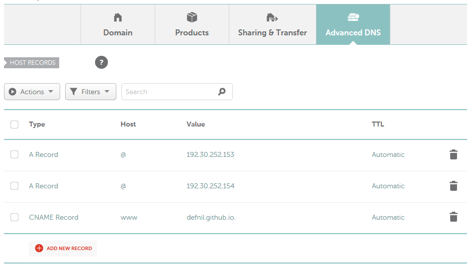
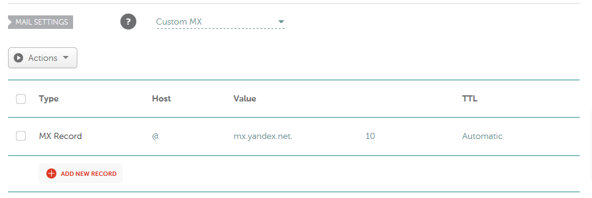

Custom Domain Settings of Yandex Mail
This post is talking about the steps needed to set up a custom domain mail account using Yandex Mail service.
As far as I know, Outlook.com (Microsoft) and Google have stopped their free services for custom domain mails. After a search, I found Yandex mail. Yandex Mail provides unlimited mail accounts (by default 1000 but you can apply more) with unlimited storage space. Also, Yandex allows custom logo in the web interface. The most important thing is: all of these features are free to use.
Note: Yandex is originated from Russia though, but luckily it has English interface for easy access.
Here, I assume you already have your own domain prepared. Please follow these steps to use Yandex custom domain mail, FOR FREE:
-
log into your Yandex Mail, and go to https://domain.yandex.com/ to add your own domain, e.g., oxyz.org
-
Verify your domain according to the instructions of Yandex. If you are hosting your site using Github, the first option is the most convinient: just creating a .html file with specified string as content, and uploading to the Github server. It does not need to touch your DNS settings. BTW, this is my host records settings on Namecheap.com:
 -
Mail server settings on your domain provider side (we just use Namecheap.com as an example, and please note that it may take several minutes to take effects):
 -
After the success of verifications, you are free to create email accouts with your own custom domain, as many as you want.
-
Log into your new email by visiting http://mail.yandex.com/for/yourdomain.com
All set. Just enjoy your own email address!
Comments
Comments powered by Disqus